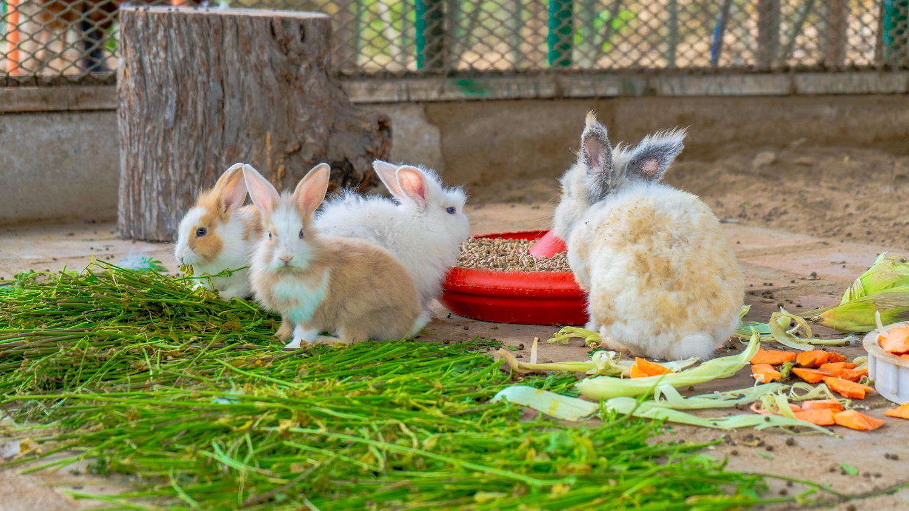

Los Animales que Rescatamos
A lo largo de nuestro camino, por nuestra fundación han pasado muchos seres que necesitaban una segunda oportunidad

Perros
Nuestro enfoque principal. Rescatamos perros de todas las edades, razas y condiciones. Desde cachorros hasta adultos mayores.

Gatos
Trabajamos con gatos domésticos y callejeros, proporcionándoles cuidado y hogares. Especial atención a gatos bebés y madres gestantes.

Otros Animales
Hemos ayudado a conejos, gallinas, ovejas e incluso un burrito. Cada vida importa y merece cuidado y respeto.